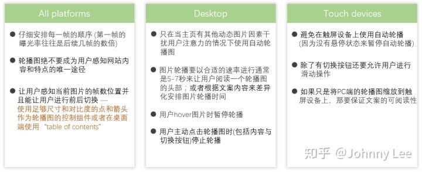
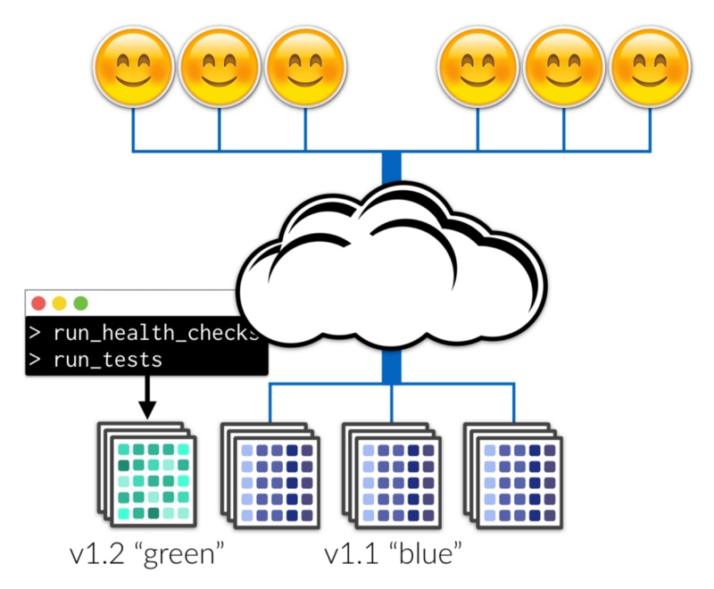

推荐阅读 2018.06
Week 1
1、How JavaScript works: the rendering engine and tips to optimize its performance
介绍了浏览器中的重要组成部分：渲染引擎。并且提出了优化rendering的一些建议
JavaScript
Avoid setTimeout or setInterval for visual updates. These will invoke the callback at some point in the frame, possible right at the end.
Move long-running JavaScript computations to Web Workers as we havepreviously discussed.
Use micro-tasks to introduce DOM changes over several frames.
CSS
Reduce the complexity of your selectors.
Reduce the number of elements on which style calculation must happen.
Layout
Reduce the number of layouts whenever possible.
Use flexbox over older layout models whenever possible. It works faster and can create a huge performance advantage for your app.
Avoid forced synchronous layouts.
Paint
Changing any property other than transforms or opacity triggers a paint.
If you trigger a layout, you will also trigger a paint, since changing the geometry results in a visual change of the element.
Reduce paint areas through layer promotion and orchestration of animations.
2、JS Linter 进化史
JSLint --> JSHint --> ESLint. 其他还有jscs，tslint
3、了解下 DDoS攻击方式
文章简单介绍了一些常见的DDos攻击方式。主要包括了：
攻击带宽：以力取胜
ICMP Flood：ICMP（Internet控制报文协议）用于在IP主机、路由器之间传递控制消息，控制消息是指网络通不通、主机是否可达、路由是否可用等网络本身的消息，虽然并不传输用户数据，但是对于用户数据的传递起着重要的作用。
NTP Flood：NTP是标准的基于UDP协议传输的网络时间同步协议，由于UDP协议的无连接性，方便伪造源地址。攻击者使用特殊的数据包，也就是IP地址指向作为反射器的服务器，源IP地址被伪造成攻击目标的IP，反射器接收到数据包时就被骗了，会将响应数据发送给被攻击目标，耗尽目标网络的带宽资源。因此，“问-答”方式的协议都可以被反射型攻击利用。
攻击系统/应用：以巧取胜
SYN Flood：SYN Flood 就是用户向服务器发送报文后突然死机或掉线，那么服务器在发出应答报文后就无法收到客户端的确认报文（第三次握手无法完成），这时服务器端一般会重试并等待一段时间后再丢弃这个未完成的连接。
CC攻击：CC攻击是目前应用层攻击的主要手段之一，借助代理服务器生成指向目标系统的合法请求，实现伪装和DDoS。
DNS Query Flood：攻击者请求解析的域名是随机生成或者是网络上根本不存在的域名，由于在本地无法查到对应的结果，服务器必须使用递归查询向上层域名服务器提交解析请求，引起连锁反应。解析过程给服务器带来很大的负载，每秒钟域名解析请求超过一定的数量就会造成DNS服务器解析域名超时。
4、为什么defineProperty不能检测到数组长度的“变化”
核心点，数组的length属性不可配置。
enumberable: false
configurable: false
writable: true
5、互联网企业数据安全体系建设
数据安全概览

6、合并HTTP请求 vs 并行HTTP请求，到底谁更快？
雅虎在2006年提出的26条优化建议中包括了减少请求（直接行为就是资源合并）和拆分资源两项，作者就是在探讨这两项稍有背离原则的使用场景。文中包含了一些浏览器与TCP/IP细节的讨论，以及一定的测试对比，虽然内容与实验方法还是比较简陋，但是对读者有一个启发：凡事并无绝对，理解优化背后的原理远比学习优化手段要重要。
7、WWDC 中提到的浏览器 Fingerprinting 有多可怕？👍
像是通过指纹、DNA来标识每个人类个体，我们也可以通过一些IP地址、系统信息、JavaScript行为、Flash与Java插件、字体、Canvas、WebGL等来唯一标识设备的浏览器
github repo: https://github.com/Valve/fingerprintjs2
8、Recursion? We don't need no stinking recursion!👍
递归是程序设计中非常常见的一种形式，文中介绍了如何将一些递归改为循环的技巧
- hide the recursion with iterators
- abstract the recursion with higher-order recursive functions
- convert recursion to iteration with tail calls
- convert tail-recursive functions into loops
- implement multirec with our own stack
- implementing depth-first iterators with our own stack
- implementing breadth-first iterators with a queue
9、The 7 Biggest Lessons I’ve Learned By Building A Twitter Bot
- Don’t try to save time by skipping Typescript
- Async /await is great until it isn’t & exception handling can be tough
- Logging is the key
- Going vanilla on the frontend without a framework can be refreshing
- Embrace the CLI and build your own tools
- “Now” is a great platform for building bots — node vs Docker
- Not all APIs were created equal — GitHub vs Twitter
10、How to set-up a powerful API with Nodejs, GraphQL, MongoDB, Hapi, and Swagger
- part 1: https://medium.freecodecamp.org/how-to-setup-a-powerful-api-with-nodejs-graphql-mongodb-hapi-and-swagger-e251ac189649
- part 2: https://medium.freecodecamp.org/how-to-set-up-a-powerful-api-with-nodejs-graphql-mongodb-hapi-and-swagger-part-ii-80266790a3ac
文章介绍了如何使用一些技术框架来搭建一个GraphQL类的简单服务。
11、如何精确统计页面停留时长
确定页面停留时长、活动时间，其实就是统计页面路由的跳转、页面可见性变化。可以把页面生命周期抽象为三个动作：进入、活跃状态切换与离开。
对于常规页面的 首次加载、页面关闭、刷新 等操作都可以通过 window.onload 和 window.onbeforeunload 事件来监听页面进入和离开，浏览器前进后退可以通过 pageshow 和 pagehide 处理。
对于单页应用内部的跳转可以转化为两个问题：
- 监听路由变化
- 判断变化的URL是否为不同页面
Week 2
1、视频播放--踩坑小计
简单介绍了HTML video相关的兼容性问题，主要包括了自动播放、全屏与非全屏播放、事件触发与监听以及播放控件隐藏的解决方案。
2、Combining the Powers of SEM and BIO for Improving CSS👍
作者总结了一套CSS设计、开发与维护的方法论。
SEM
- Scalable
- Extensible
- Maintainable
BIO
- BEM
- ITCSS
- OOCSS
3、React Fiber架构👍
性能优化是一个系统性的工程，如果只看到局部，引入算法，当然是越快越好; 但从整体来看，在关键点引入缓存，可以秒杀N多算法，或另辟蹊径，探索事件的本质，可能用户要的并不是快……
其实基于算法的优化是一种绝望的优化，就类似玛雅文明因为找不到铜矿一直停留于石器时代，诞生了伟大的工匠精神把石器打磨得美伦美奂。
React16发布了全新架构Fiber。本文介绍了这种新架构解决的问题与实现的思路。
React16启用了全新的架构，叫做Fiber，其最大的使命是解决大型React项目的性能问题，再顺手解决之前的一些痛点。
4、页面可视化搭建工具前生今世👍
文章介绍了几种不同维度的可视化页面搭建工具的划分与特点。按照系统功能维度可以分为：HTML Tree 编辑、Component Tree 编辑、页面 Data 编辑、Dynamic Logic 编辑。不同维度的工具其实针对了不同的人群、解决了不同的需求。最后，文章还整理了需求业内的实践案例以及不错的博客文章。
5、轮播图十原则

6、一个程序员的成长之路 - 剖析别人，总结自己
7、给前端工程师讲设计终篇
设计仅仅是界面美化么？设计语言到底是指什么？设计是如何表达？每个前端工程师都需要了解交互与设计背后的理论与思想。
- 《Don't make me think》
- 《用户体验要素》
- 《可用性工程》
- 《交互设计精髓》
- 《信息架构》
- 《认知与设计》
- 《认知心理学》
- ……
8、The Front-End Tooling Survey 2018 - Results
前端技术工具使用情况的调查与统计。从统计结果来看，一些“传统”的技术（jquery、bootstrap等仍有不容小觑的市场）
9、State of the Web: Top Image Optimization Strategies
图片优化的四大策略：
Lazy Loading (LL): By deferring load of images that do not appear immediately, the page will be interactive faster.
Image Optimization (IO): Google recommends a quality setting 85% as a good balance image quality vs. image size.
Responsive Images (RI): If the image on the screen is over 25KB smaller than the image downloaded, the lighthouse audit fails. The goal here is to offer appropriately dimensioned images to the device requesting the files.
Image Format (IF): Lighthouse checks to see if a next gen format (JPEG2000, WebP) will save over 8 KB on any given image.
通过收集WebPageTest的数据，文章分析了top 500000网站的图片优化情况。优化图片是一个付出20%努力就可以得到80%收益的事。
10、部署 != 发布
- part 1: https://github.com/xitu/gold-miner/blob/master/TODO1/deploy-not-equal-release-part-one.md
- part 2: https://github.com/xitu/gold-miner/blob/master/TODO1/deploy-not-equal-release-part-two.md
上线(ship)一般分为了四个阶段：构建、测试、部署和发布。其中：部署主要是指在生产环境的基础设置中安装新版本服务代码；发布是指将线上流量转移到新版本（承接线上流量）。
部署不需要向用户提供新版本的服务。

文章简单介绍了一些常见的部署+发布策略，包括但不限于：
- 金丝雀发布(canary release)：在集群环境中，首先原地发布一个实例
- 内部测试(dogfooding)：仅向员工发布新版本服务的流行技术
- 增量发布(incremental release)：从发送到新版本服务的一些小百分比生成请求开始，同时监视这些请求的性能
- 黑暗流量(dark traffic)：你发布的系统会复制生产请求，并将一个副本发送到你的服务已知的良好“轻量级”版本，另一个发送到新的“重量级”版本。“轻量级”版本负责实际响应用户请求。“重量级”版本处理请求，但其响应会被忽略。
11、为 Luy 实现 React Fiber 架构
通过开发实践，结合代码讲解了React Fiber的设计与架构思路。
12、React 是怎样炼成的👍
本文主要讲述 React 的诞生过程和优化思路。
内容整理自 2014 年的 OSCON - React Architecture by vjeux，虽然从今天（2018）来看可能会有点历史感，但仍然值得学习了解。以史为鉴，从中也可以管窥 Facebook 优秀的工程管理文化。
Week 3
1、Getting Started With CSS Layout👍
作为一篇关于CSS布局技术的综述类文章，很适合对于其中的资源链接进一步阅读。我有一篇自己的汉化版可以看这里 >>
2、The most important lessons I’ve learned after a year of working with React
作者独具学习与使用React的一些心得体会：
- React is evolving, so you must be up to date
- Don’t be afraid to split your code into smaller chunks
- Don’t stick to the basics — become advanced
- Don’t over-complicate things
- Refactor, refactor and refactor — it’s normal
- If you love it, you’ll thrive